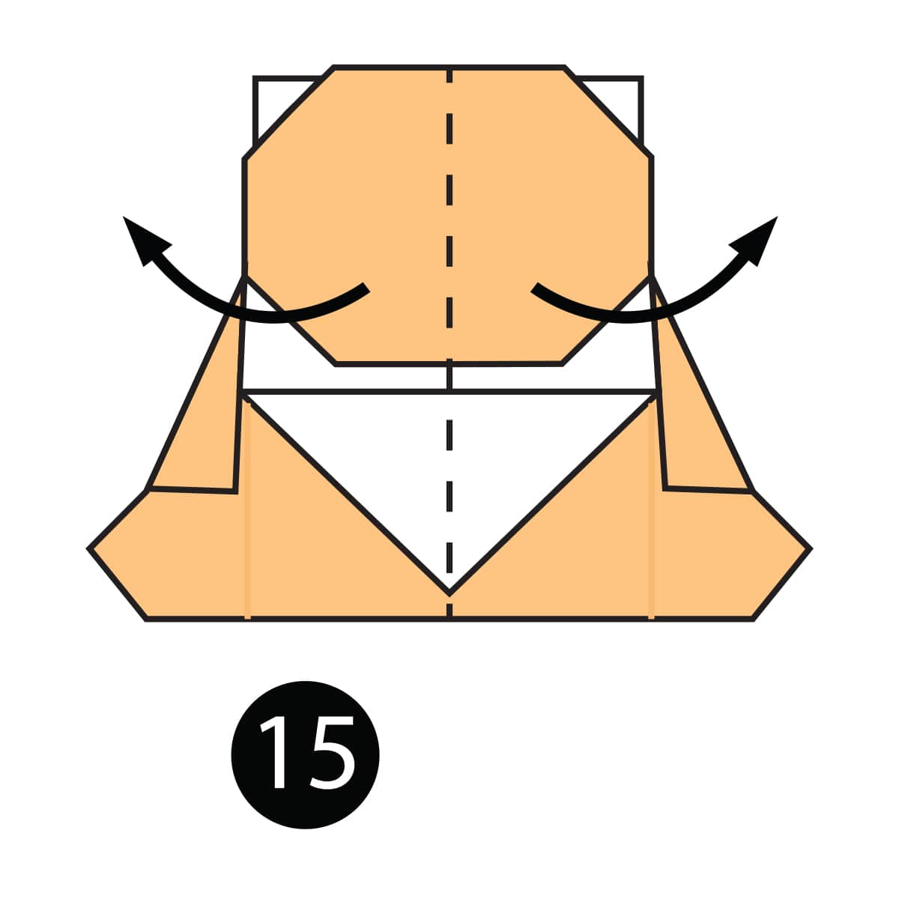

Oragami Designs
About Us
Follow us

Interesting Facts about camel
- The word ‘camel’ comes from an Arabic word, when it’s literally translated, it means beauty. Don’t ever try
and say that camels are ugly!
- They need to stay hydrated in the desert, so it’s no surprise that camels can drink as much as 40 gallons of
water at once. Considering it’s not being stored in their humps, that’s pretty amazing.
- During the Second World War, German tank drivers would drive their vehicles over camel droppings, thinking
it would bring them good luck.

Interesting Facts about pigeon
- They can find thier way back to the nest from 1300 miles away.
- They can understand space and time.
- They might be the first domesticated bird.

Interesting Facts about Bears
- Bears are extraordinarily intelligent animals.
- Bears have excellent senses of smell, sight and hearing.
- They are also fantastic at climbing trees, swimming and are able to run at speeds of up to 60 kilometers (37 miles) per hour for short periods of time.

Interesting Facts about pandas
- Pandas go from pink to white and black (or brown).
- Pandas are "lazy" — eating and sleeping make their day.
- An adult can eat 12–38 kilos of bamboo per day!

Interesting Facts about cicada
- They come in droves!
- They have unique mating calls
- they have strange common ancestor
Cick on the pictures for more information.